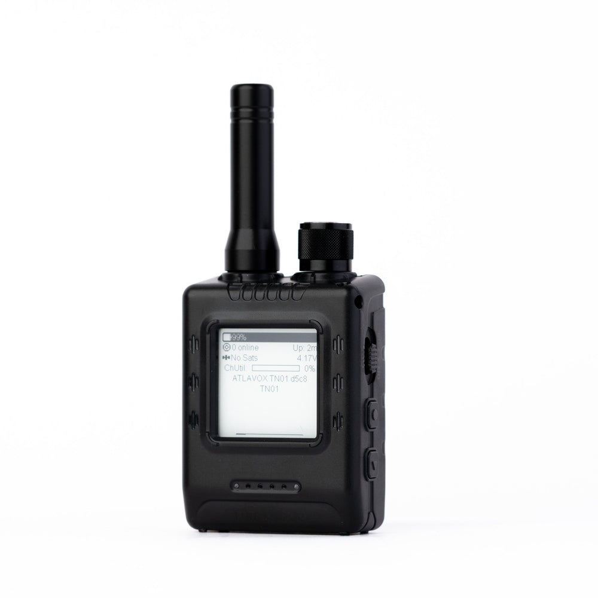

UberClicker was born out of the desire for simple, robust slide control, and the belief that “there must be a simpler way”.
The UberClicker system is designed to be flexible around your requirements — whether that means a hardware device with high-powered radios, a phone app on Wi-Fi, or anything in between.
The ThinkNode M5 can use high-powered radios, direct Bluetooth, or OSC and Cloud control over Wi-Fi to control your slides.
With UberClicker Cloud, the Companion app forwards cues from the cloud to your presentation software. Use keyboard control for the active application, or OSC and the ProPresenter integration to control supported software in the background while you get other work done on the slide computer.
Three Options
Transmitter

ThinkNode M5
/
iPhone
Receiver
LoRa (*1km Range)
Computer
Keystrokes
OSC
Wi-Fi
Slide software
OSC commands
Cloud
Wi-Fi / Internet Pro
Companion App
(Keystrokes, OSC, or Direct Control)
* Tested using highest transmission setting in a suburban context with two M5 units
Many clickers. Many destinations.
Pro
Send each clicker to one or more Cloud Channels. Each channel delivers cues to its connected clients.
Transmitters
M5 clickersPhysical devices · Wi-Fi
Phone clickersMobile app
Web clickersBrowser clients
Cloud Channels
Channel A
Channel B
Receiving clients
Desktop CompanionsKeyboard / OSC outputs
Phone / tablet displaysLive cues in a browser
Browser displaysLive cues on any computer
Up to eight listeners per channel. Each Companion listens to one channel at a time.
Multiple devices. Local control.
Free
Transmitters
M5 transmitter APhysical clicker
M5 transmitter BPhysical clicker
LoRa
Local broadcast
No internet needed
Receivers
M5 receiver AKeyboard / OSC → computer
M5 receiver BKeyboard / OSC → computer
Each receiver listens to its selected transmitter. Multiple receivers can listen to the same transmitter.
Payment method required. Renews automatically after the trial; cancel before renewal in billing. Cloud control needs an internet connection and an awake computer.
Billed in AUD.
Per channel. Your first month is free.
Download Companion & Device Setup
Configure & Flash Your Devices, and receive cues via the UberClicker Cloud (Pro), and send it directly to your slide software. Slide software can still receive commands in the background.